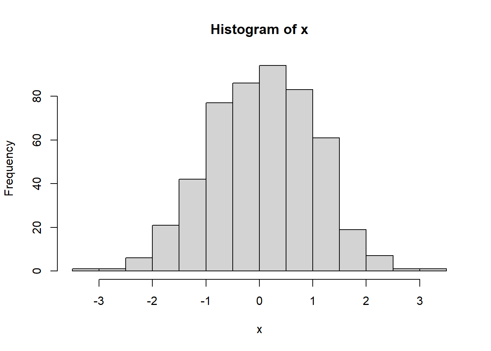
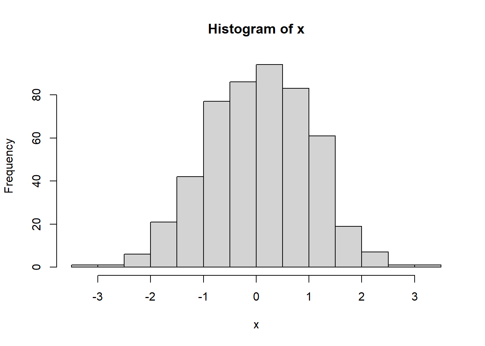
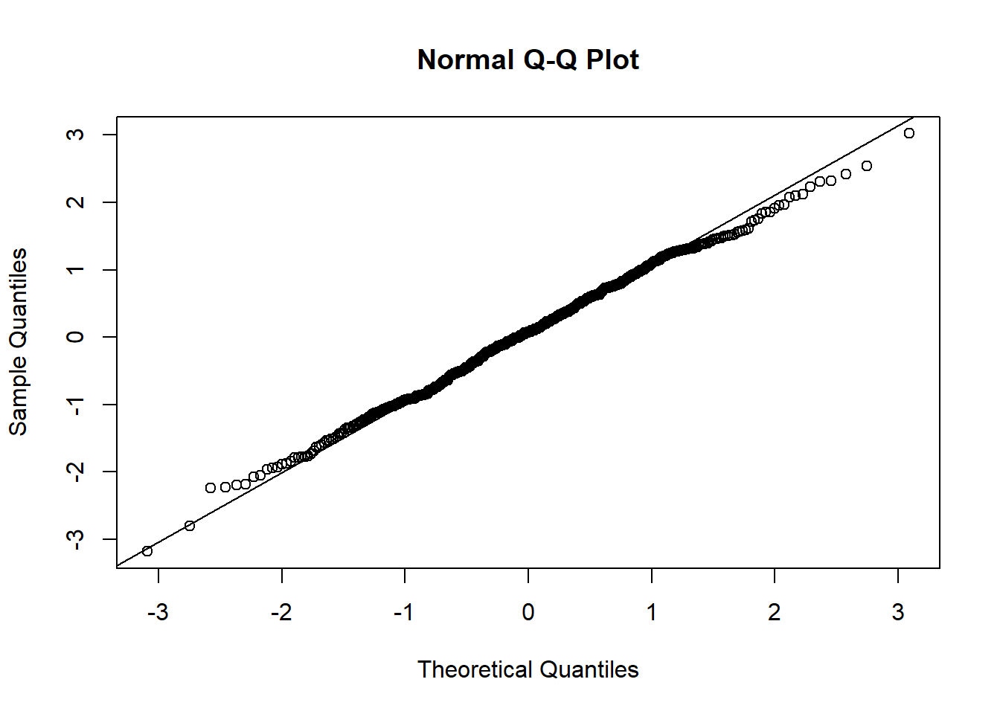
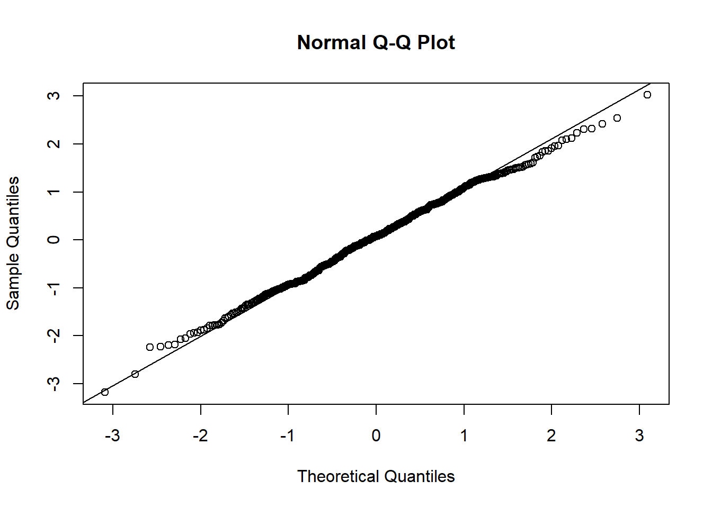

Chapter 1 Step into R program-Analyzing iris flower dataset
Getting started
- Install R from www.R-project.org. Choose the cloud server or any U.S. mirror site.
- Install RStudio Desktop from www.RStudio.com. Rstudio uses the R software you just installed in the background, but provides a more user-friendly interface. We will use Rstudio. R commands can be typed directly into the “Console” window. Or you can enter them in the “R Script” window and click the “Run” button.

Just try all of these commands and guess what’s going on. If it takes a few months to type these 188 characters, try www.RapidTyping.com.

1.1 Data frames have rows and columns: the Iris flower dataset
In 1936, Edgar Anderson collected data to quantify the geographic variation of Iris flowers. The data set consists of 50 samples from each of three sub-species ( Iris setosa, Iris virginica and Iris versicolor). Four features were measured from each sample: the lengths and the widths of sepals and petals, in centimeters (cm). This data is included in R software. Go to the Wikipedia page for this data set (yes, it is famous!). Have a quick look at the data there, think about what distinguishes the three species? If we have a flower with sepals of 6.5cm long and 3.0cm wide, petals of 6.2cm long, and 2.2cm wide, which species does it most likely belong to? Think (!) for a few minutes while eyeballing the data at Wikipedia.

Figure 1.1: Iris flower. Photo from Wikipedia.

Figure 1.2: Example of a data frame.
To answer these questions, let’s visualize and analyze the data with R. Type these commands without the comments after “#”.
iris #This will print the whole dataset, which is included with R
dim(iris) # show the dimension of the data frame: 150 rows and 5 columns.
head(iris) # show the first few rows; useful for bigger datasets. So the first 4 columns contain numeric values. The last one is species information as character values. This is an important distinction, as we cannot add or subtract character values. This object is a data frame, with both numeric and character columns. A matrix only contains one type of values, often just numbers.
To have a look at the data in a spreadsheet, we can use the fix( ) function.
#fix(iris) # examine data frame in a spreadsheet. Click on column names to double-check data types (numeric vs. character). Sometimes we need to overwrite data types guessed by R. For example, sometimes we use 1 for male and 0 for female. These are essentially categories; Values like 1.6 make no sense. In this case we need to enforce this column as characters. Note this window needs to be closed before proceeding to the next.
View(iris) # this Rstudio function also shows data. Note R is case sensitive. Individual values in a data frame can be accessed using row and column indices.
iris[3, 4] # shows the value in 3rd row, 4th column. It is 0.2.
iris[3, ] # shows all of row 3
iris[, 4] # shows all of column 4
iris[3, 1:4] # shows row 3, columns 1 to 4. 
colnames(iris) # Column names. ## [1] "Sepal.Length" "Sepal.Width" "Petal.Length" "Petal.Width"
## [5] "Species"Remember these column names, as we are going to use them in our analysis now. Note that sepal length information is contained in the column named Sepal.Length. Since R is case sensitive, we have to type these column names exactly as above.
attach(iris) # attach dataset to R working memory, so that columns can be accessible by name.
Petal.Length # after attaching, we can just use column names to represent a column of numbers as a vector R is case-sensitive. “petal.length” will not be recognized.
mean(Petal.Length) # mean( ) is a function that operates on Petal.Length, a vector of 150 umbers## [1] 3.758The best way to learn about other R functions is Google search.
1.2 Analyzing one set of numbers
x <- Petal.Length # I am just lazy and don’t want to type “Petal.Length”, repeatedly.
summary(x)## Min. 1st Qu. Median Mean 3rd Qu. Max.
## 1.000 1.600 4.350 3.758 5.100 6.900- The minimum petal length is 1.0, and the maximum is 6.9.
- Average petal length is 3.758.
- The mid-point or median is 5.35, as about half of the numbers is smaller than 5.35. Why the median is different from the mean? What happens if there is a typo and one number is entered 340cm instead of 3.40cm?
- The 3rd quartile, or 75th percentile is 5.1, as 75% of the flowers has petals shorter than 5.1. The 95th percentile for the weight of 2-year-old boy is 37 pounds. If a 2-year-old boy weighs 37 pounds, he is heavier than 95% of his peers. If a student’s GPA ranks 5th in a class of 25, he/she is at 80th percentile.
- The 1st quartile, or 25th percentile is 1.6. Only 25% of the flowers has petals shorter than 1.6. These summary statistics are graphically represented as a boxplot in the Figure 1.3A. Boxplots are more useful when multiple sets of numbers are compared.
boxplot(x) # Figure 1.3A. It graphically represents the spread of the data.
boxplot(iris[, 1:4]) # boxplot of several columns at the same time Figure 1.3B.

Figure 1.3: Boxplot of petal length (A) and of all 4 columns (B).
In Rstudio, you can copy a plot to clipboard using the Export button on top of the plot area. Or you can click zoom, right click on the popup plot and select “Copy Image”. Then you can paste the plot into Word. If you are using R software, instead of Rstudio, you can right click on the plots and copy as meta-file.
If all the measurements are close to the mean (µ), then standard deviation should be small.
sd(x) # sd( ) is a function for standard deviation## [1] 1.765298sd(Sepal.Width) ## [1] 0.4358663As we can see, these flowers have similar sepal width. They differ widely in petal length. This is consistent with the boxplot above. Perhaps changes in petal length lead to better survival in different habitats.
With R it is very easy to generate graphs.
barplot(x)Figure 1.4: Barplot of petal length
As we can see, the first 50 flowers (Iris setosa) have much shorter petals than the other two species. The last 50 flowers (Iris verginica) have slightly longer petals than the middle (iris versicolor).
plot(x) # Run sequence plot
hist(x) # histogram
lag.plot(x)
qqnorm(x) # Q-Q plot for normal distribution
qqline(x) 


Figure 1.5: Sequence plot, histogram, lag plot and normal Q-Q plot.
Histogram shows the distribution of data. The histogram top right of Figure 1.5 shows that there are more flowers with Petal Length between 1 and 1.5. It also shows that the data does not show a bell-curved distribution.
Lag plot is a scatter plot against the same set of number with an offset of 1. Any structure in lag plot indicate non-randomness in the order in which the data is presented.
Q-Q plot can help check if data follows a Gaussian distribution, which is widely observed in many situations. Also referred to as normal distribution, it is the pre-requisite for many statistical methods. See Figure 1.6 for an example of normal distribution. Quantiles of the data is compared against those in a normal distribution. If the normal Q-Q plot is close to the reference line produced by qqline( ), then the data has a normal distribution.
 
 

Figure 1.6: (ref:1-5)
1.3 Student’s t-test
In hypothesis testing, we evaluate how likely the observed data can be generated if a certain hypothesis is true. If this probability (p value) is very small (< 0.05, typically), we reject that hypothesis. Are the petal lengths of iris setosa significantly different from these of iris versicolor?
x <- Petal.Length[1:50] # the first 50 values of Sepal.Length are for iris setosa
y <- Petal.Length[51:100] # the next 50 values of Sepal.Length are for iris versicolor
t.test(x, y) # t.test( ) is an R function for student’s t-test##
## Welch Two Sample t-test
##
## data: x and y
## t = -39.493, df = 62.14, p-value < 2.2e-16
## alternative hypothesis: true difference in means is not equal to 0
## 95 percent confidence interval:
## -2.939618 -2.656382
## sample estimates:
## mean of x mean of y
## 1.462 4.260The null hypothesis is that the true mean is the same. Since p value is really small, we reject this hypothesis. Iris versicolor has longer sepals than iris setosa.
We can also do t-test on one set of numbers. This is a one-sample t-test of mean:
t.test(Sepal.Length, mu = 5.8)##
## One Sample t-test
##
## data: Sepal.Length
## t = 0.64092, df = 149, p-value = 0.5226
## alternative hypothesis: true mean is not equal to 5.8
## 95 percent confidence interval:
## 5.709732 5.976934
## sample estimates:
## mean of x
## 5.843333In this case, our hypothesis is that the true average of sepal length for all iris flowers is 5.8. Since p value is quite big, we accept this hypothesis. This function also tells us the 95% confidence interval on the mean. Based on our sample of 150 iris flowers, we are 95% confident that the true mean is between 5.71 and 5.98.
1.4 Test for normal distribution
We can perform hypothesis testing on whether a set of numbers derived from normal distribution. The null hypothesis is that the data is from a normal distribution.
shapiro.test(Petal.Length)##
## Shapiro-Wilk normality test
##
## data: Petal.Length
## W = 0.87627, p-value = 7.412e-10If petal length is normally distributed, there is only 7.412×10-10 chance of getting a test statistic of 0.87627, which is observed in our sample of 150 flowers. In other words, it is highly unlikely that petal length follows a normal distribution. We reject the normal distribution hypothesis.
1.5 Analyzing a column of categorical values
In the iris dataset, the last column contains the species information. These are “string” values or categorical values.
counts <- table(Species) # tabulate the frequencies
counts## Species
## setosa versicolor virginica
## 50 50 50pie(counts) # See Figure 1.7A
barplot(counts) # See Figure 1.7B

Figure 1.7: Frequencies of categorical values visualized by Pie chart (A) and bar chart (B).
Pie charts are very effective in showing proportions.
We can see that the three species are each represented with 50 observations.
1.6 Analyzing the relationship between two columns of numbers
Scatter plot is very effective in visualizing correlation between two columns of numbers.
attach(iris) # attach the data set
x <- Petal.Width # just lazy
y <- Petal.Length
plot(x, y) # scatterplot, refined version in Figure 1.9
Figure 1.8: Scatter plot of petal width and petal length.
Figure 1.8 shows that there is a positive correlation between petal length and petal width. In other words, flowers with longer petals are often wider. So the petals are getting bigger substantially, when both dimensions increase.
Another unusual feature is that there seems to be two clusters of points. Do the points in the small cluster represent one particular species of Iris? We need to further investigate this. The following will produce a plot with the species information color-coded. The resultant Figure 1.9 clearly shows that indeed one particular species, I. setosa constitutes the smaller cluster in the low left. The other two species also show difference in this plot, even though they are not easily separated. This is a very important insight into this dataset.
plot(x, y, col = rainbow(3)[Species]) # change colors based on another column (Species).
legend("topleft", levels(Species), fill = rainbow(3)) # add legends on topleft.
Figure 1.9: Scatter plot shows the correlation of petal width and petal length.
The rainbow( ) function generates 3 colors and Species information is used to choose colors. Note that Species column is a factor, which is a good way to encode columns with multiple levels. Internally, it is coded as 1, 2, 3.
str(iris) # show the structure of data object## 'data.frame': 150 obs. of 5 variables:
## $ Sepal.Length: num 5.1 4.9 4.7 4.6 5 5.4 4.6 5 4.4 4.9 ...
## $ Sepal.Width : num 3.5 3 3.2 3.1 3.6 3.9 3.4 3.4 2.9 3.1 ...
## $ Petal.Length: num 1.4 1.4 1.3 1.5 1.4 1.7 1.4 1.5 1.4 1.5 ...
## $ Petal.Width : num 0.2 0.2 0.2 0.2 0.2 0.4 0.3 0.2 0.2 0.1 ...
## $ Species : Factor w/ 3 levels "setosa","versicolor",..: 1 1 1 1 1 1 1 1 1 1 ...Perhaps due to adaption to environment, change in petal length lead to better survival. With the smallest petals, Iris Setosa is found in Arctic regions. Iris versicolor is often found in the Eastern United States and Eastern Canada. Iris virginica “is common along the coastal plain from Florida to Georgia in the Southeastern United States [Wikipedia].” It appears the iris flowers in warmer places are much larger than those in colder ones. With R, it is very easy to generate lots of graphics. But we still have to do the thinking. It requires to put the plots in context.
We can quantitatively characterize the strength of the correlation using several types of correlation coefficients, such as Pearson’s correlation coefficient, r. It ranges from -1 to 1.
cor(x, y) ## [1] 0.9628654This means the petal width and petal length are strongly and positively correlated.
cor.test(x, y)##
## Pearson's product-moment correlation
##
## data: x and y
## t = 43.387, df = 148, p-value < 2.2e-16
## alternative hypothesis: true correlation is not equal to 0
## 95 percent confidence interval:
## 0.9490525 0.9729853
## sample estimates:
## cor
## 0.9628654Through hypothesis testing of the correlation, we reject the null hypothesis that the true correlation is zero. That means the correlation is statistically significant. Note that Pearson’s correlation coefficient is not robust against outliers and other methods such as Spearman’s exists. See help info:
?cor # show help info on cor ( )We can also determine the equation that links petal length and petal width. This is so called regression analysis. We assume Petal.Length = a × Petal.Width + c + e, where a is the slope parameter, c is a constant, and e is some random error. This linear model can be determined by a method that minimizes the least squared-error:
model <- lm(y ~ x) # Linear Model (lm): petal length as a function of petal width
summary(model) # shows the details##
## Call:
## lm(formula = y ~ x)
##
## Residuals:
## Min 1Q Median 3Q Max
## -1.33542 -0.30347 -0.02955 0.25776 1.39453
##
## Coefficients:
## Estimate Std. Error t value Pr(>|t|)
## (Intercept) 1.08356 0.07297 14.85 <2e-16 ***
## x 2.22994 0.05140 43.39 <2e-16 ***
## ---
## Signif. codes: 0 '***' 0.001 '**' 0.01 '*' 0.05 '.' 0.1 ' ' 1
##
## Residual standard error: 0.4782 on 148 degrees of freedom
## Multiple R-squared: 0.9271, Adjusted R-squared: 0.9266
## F-statistic: 1882 on 1 and 148 DF, p-value: < 2.2e-16As we can see, we estimated that a=2.22944 and c=1.08356. Both parameters are significantly different from zero as the p values are <2×10-16 in both cases. In other words, we can reliably predict Petal.Length = 2.22944 × Petal.Width + 1.08356. This model can be put on the scatter plot as a line.
plot(model)
abline(model) # add regression line to existing scatter plot. Finishes Figure 1.8.Sometimes, we use this type of regression analysis to investigate whether variables are associated.
1.7 Visualizing and testing the differences in groups
Are boys taller than girls of the same age? Such situations are common. We have measurements of two groups of objects and want to know if the observed differences are real or due to random sampling error.
attach(iris) # attach iris data
boxplot(Petal.Length ~ Species) # Generate boxplot: Petal length by species, see Figure 1.11
Figure 1.10: Boxplot of petal length, grouped by species.
From the boxplot, it is obvious that I. Setosa has much shorter petals. But are there significant differences between I. versicolor and I. virginica? We only had a small sample of 50 flowers for each species. But we want to draw some conclusion about the two species in general. We could measure all the iris flowers across the world; Or we could use statistics to make inference. First we need to extract these data
x <- Petal.Length[51:100] # extract Petal Length of iris versicolor, from No.51 to No.100
x # x contain 50 measurements
y <- Petal.Length[101:150] # extract Petal length of iris virginica, from No. 101 to No. 150
y # y contain 50 measurementsboxplot(x, y) # a boxplot of the two groups of values
t.test(x, y)##
## Welch Two Sample t-test
##
## data: x and y
## t = -12.604, df = 95.57, p-value < 2.2e-16
## alternative hypothesis: true difference in means is not equal to 0
## 95 percent confidence interval:
## -1.49549 -1.08851
## sample estimates:
## mean of x mean of y
## 4.260 5.552In this student’s t-test, our null hypothesis is that the mean petal length is the same for I. versicolor and I. virginica. A small p value of 2.2x10-16 indicates under this hypothesis, it is extremely unlikely to observe the difference of 1.292cm through random sampling. Hence we reject that hypothesis and conclude that the true mean is different. If we measure all I. versicolor and I. virginica flowers in the world and compute their true average petal lengths, it is very likely that the two averages will differ. On the other hand, if p value is larger than a threshold, typically 0.05, we will accept the null hypothesis and conclude that real average petal length is the same.
We actually do not need to separate two set of numbers into two data objects in order to do t-test or compare them side-by-side on one plot. We can do it right within the data frame. R can separate data points by another column.
x2 <- iris[51:150, ] # Extract rows 51 to 150
t.test(Petal.Length ~ Species, data = x2) # t-test of Petal.Length column, divided by the Species column in x2.
boxplot(Petal.Length ~ Species, data = droplevels(x2)) # droplevels( ) removes empty levels in Species1.8 Testing the difference among multiple groups (Analysis of Variance: ANOVA)
As indicated by Figure 1.10, sepal width has small variation, even across 3 species. We want to know if the mean sepal width is the same across 3 species. This is done through Analysis of Variance (ANOVA).
boxplot(Sepal.Width ~ Species) # Figure 1.12
Figure 1.11: Boxplot of sepal width across 3 species.
summary(aov(Sepal.Width ~ Species))## Df Sum Sq Mean Sq F value Pr(>F)
## Species 2 11.35 5.672 49.16 <2e-16 ***
## Residuals 147 16.96 0.115
## ---
## Signif. codes: 0 '***' 0.001 '**' 0.01 '*' 0.05 '.' 0.1 ' ' 1Since p value is much smaller than 0.05, we reject the null hypothesis. The mean sepal width is not the same for 3 species. This is the only thing we can conclude from this. The boxplot in Figure 1.11 seems to indicate that I. Setosa has wider sepals. Now we demonstrate how to use the lattice package for visualizing data using multiple panels. This package is not included in the base version of R. They need to be downloaded and installed. One of main advantages of R is that it is open, and users can contribute their code as packages. If you are using Rstudio, you can choose Tools->Install packages from the main menu, and then enter the name of the package. If you are using R software, you can install additional packages, by clicking Packages in the main menu, and select a mirror site. These mirror sites all work the same, but some may be faster. Lately I just use cloud mirror. After choosing a mirror and clicking “OK”, you can scroll down the long list to find your package. Alternatively, you can type this command to install packages.
#install.packages ("ggplot2") # choose the cloud mirror site when askedPackages only need to be installed once. But every time you need to use a package, you need to load it from your hard drive.
library(ggplot2) # load the ggplot2 packageFigure 1.12A shows the sepal width distribution for each of the 3 species. The 3 histograms are aligned in panels: layout of 1 column and 3 rows.
Figure 1.12A shows an interesting feature in how sepal width is distributed. While for I. setosa it is skewed to the right. For the other two species it is skewed to the left.
We can also have density plots side-by-side (Figure 1.12B):
ggplot(iris, aes(x = Sepal.Width, group = Species,
y = c(..count..[..group.. == 1]/sum(..count..[..group.. == 1]),
..count..[..group.. == 2]/sum(..count..[..group.. == 2]),
..count..[..group.. == 3]/sum(..count..[..group.. == 3])) * 100)) +
geom_histogram(binwidth = .2, colour = "black", fill = "lightblue") +
facet_grid(Species ~ .) +
labs(y = "Percent of Total")
ggplot(iris, aes(x = Petal.Length, fill = Species)) + geom_density(alpha = .3)
Figure 1.12: Visualizing data using the ggplot2 package.